Next: Bibliography Up: Kinetics of Glycerol Conversion Previous: Acknowledgments
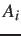
Pre-exponential factor of step i when the reaction order is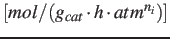
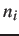
Concentration of species i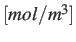
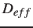
Effective diffusion coefficient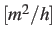
Catalyst particle diameter
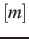
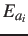
Activation energy of step i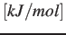
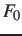
Initial Feed flowrate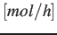
Flowrate of species i
Heat transfer coefficient
Reaction rate constant of step i when the reaction order is
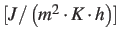
Reaction order of step i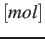
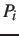
Partial pressure of species i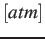
Gas constant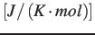
Reaction rate of step i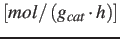
Reaction temperature
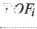
Turnover frequency of step i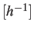
Catalyst packing amount
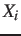
Conversion of step i
Enthalpy change of step i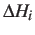
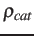
Density of packed catalyst
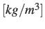
Glycerol
Oxygenates
Gases
Aromatics